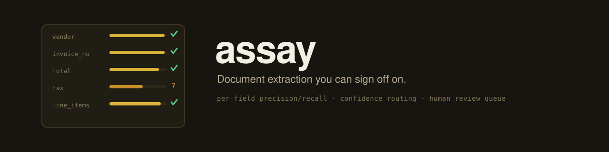

2.0%
doc accuracy on real SROIE receipts (all 4 fields correct)
Document extraction you can sign off on.
The two invoice-automation failure modes that actually cost money are a wrong total posted silently and a duplicate payment from a mis-keyed invoice number, so the bar is not "usually right". Assay extracts structured data from PDFs with an LLM behind any OpenAI-compatible endpoint, validates it against business rules, scores its own confidence, and routes anything uncertain to a human review queue instead of letting it silently reach the ERP. Its centerpiece is a per-field eval harness that tells you, before go-live, exactly which fields you can trust and which you cannot.

source: assay eval (32 synthetic invoices) + assay eval --dataset sroie --limit 50 (SROIE 2019 real receipts) · LFM2.5-1.2B Q4_K_M via llama.cpp on M4 Pro · runs 2026-07-07 · full outputs in results/
Each stage is a separate testable module, and one Pydantic model is the single source of truth: it generates the JSON schema that llama.cpp compiles into a decoding grammar, drives validation, and defines the eval fields, so the extractor, validator, and scorer cannot drift apart. Confidence is a transparent weighted sum of three inspectable components (business-rule score, model self-check, key-field completeness), not a learned score, so a reviewer can read exactly why a document is in their queue.
PDF ──> ingest ──> extract ──────────> validate ──> confidence ──> route ──> export
pypdf local LLM Pydantic + schema-valid ├─ auto-accept ──> accepted.jsonl (ERP feed)
layout constrained business + rule-pass └─ review ───────> review_queue.jsonl
mode decoding via rules + model │
JSON schema │ self-check assay review (human CLI)
(llama.cpp GBNF) │ │
▲ │ validator errors reviewed.jsonl
└── repair ────┘ (one retry)
The harness runs on two arms with two distinct jobs. Real data (SROIE 2019 scanned receipts) keeps the numbers honest; the 32-invoice synthetic arm is a controlled stress test that plants ambiguity, typos, and contradictions on purpose, with ground truth emitted by the same code that renders the PDFs. The synthetic arm flagged the day/month transposition failure class before any real document was scored; on the real arm, 9 of the 22 date errors were exactly that.
Real documents are dramatically harder than designed ones: doc-level accuracy fell from 50.0% synthetic to 2.0% real on the same model and harness. Exposing that gap before go-live is exactly what the real-data arm is for.
field precision recall exact n company 60.0% 60.0% 60.0% 50 date 59.6% 56.0% 56.0% 50 address 4.0% 4.0% 4.0% 50 total 86.0% 86.0% 86.0% 50 doc accuracy (all 4 fields) 2.0% auto-accepted at 0.85 26.0% schema failures 0
The address number is mostly a data-ceiling story, and the harness quantifies it: on 41 of the 50 receipts at least one fragment of the annotated address never appears in the provided OCR text at all, so the achievable ceiling on this slice is 18% for any model reading this input. Date errors repeat the transposition class the synthetic arm predicted. Company fails by picking the wrong header line (a cashier's name over the business name); total fails by selecting a nearby plausible amount, not by arithmetic.
Routing on real data is the sobering result: 26.0% of receipts auto-accepted, and every auto-accepted receipt had at least one wrong field, almost always the address. The honest operational conclusion: on real receipts with this model, automation is total-and-date triage at best, and the address field must never be an auto-accept criterion. The per-field report is what tells you that before you promise otherwise.
On the synthetic arm the same threshold is an explicit business dial, and the eval measures the tradeoff on this model: with a 1.2B you can have volume or safety, not both.
That is the evidence you need to justify a bigger model; everything speaks /v1/chat/completions, so pointing --url at a cloud frontier model re-scores that backend with the identical harness and watches this table move.
Cost per document, measured on the synthetic run: mean 1,881 tokens and 2.72 s/doc locally ($0 marginal); at list prices the same documents would cost about $0.00127 each on GPT-5 mini or $0.00370 on Claude Haiku 4.5. At these volumes cloud inference cost is a rounding error next to one mis-posted invoice; the argument for local is data residency and control, not dollars.
threshold auto-accepted silently wrong among accepted 0.75 22/32 (69%) 6 docs 0.80 16/32 (50%) 4 docs 0.85 6/32 (19%) 1 doc <- shipped # the 1 silent error: inv_004, symbol-only "$" on an # Australian vendor, extracted as USD. designed ambiguity, # and the argument for a rule: symbol-only currencies # never auto-accept.
The 51 tests and the synthetic golden set need no model at all. The reference runs use a local llama-server, but ASSAY_LLM_URL points the pipeline at any OpenAI-compatible endpoint.
$ uv sync $ uv run pytest # 51 offline tests, no model needed # serve a model first (reference-run setup shown) $ /path/to/llama-server -m LFM2.5-1.2B-Instruct-Uncensored-Q4_K_M.gguf \ --port 8093 --jinja -ngl 99 --ctx-size 4096 $ uv run assay generate # synthetic golden set (deterministic, seed 42) $ uv run assay eval # synthetic arm -> results/ $ uv run --extra sroie python scripts/fetch_sroie.py # SROIE 2019 (~216 MB) $ uv run assay eval --dataset sroie --limit 50 # real arm -> results/sroie/ $ uv run assay run data/golden/inv_001.pdf # single document, prints JSON $ uv run assay review # work the review queue in the terminal
--url.--limit.This section is not small print. An accuracy number without its failure modes is an advert, and this page is a datasheet.